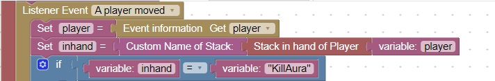
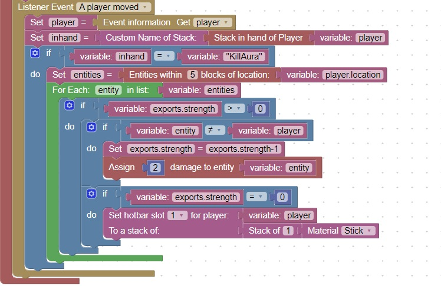
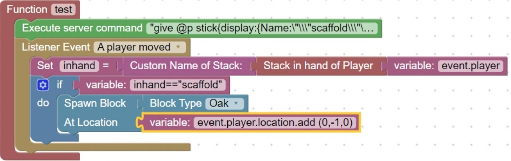

Manage Special Weapons
Using special weapons to enhance your plugin
A special weapon is basically any weapon that has a custom name. This custom name can be checked for and then cause special code to execute
When a special weapon is in a players handle, special abilities can be displayed
Check what is in the player's hand
This code will check what is in the player's hand

Handle kill Aura Special Weapon
This code will simulate the "Kill Aura" hack

Dropping special weapons
You can drop a special (custom named) weapon by using a server command:
Which can also be activated from a command block:
